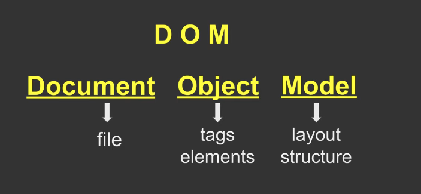
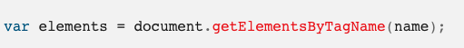
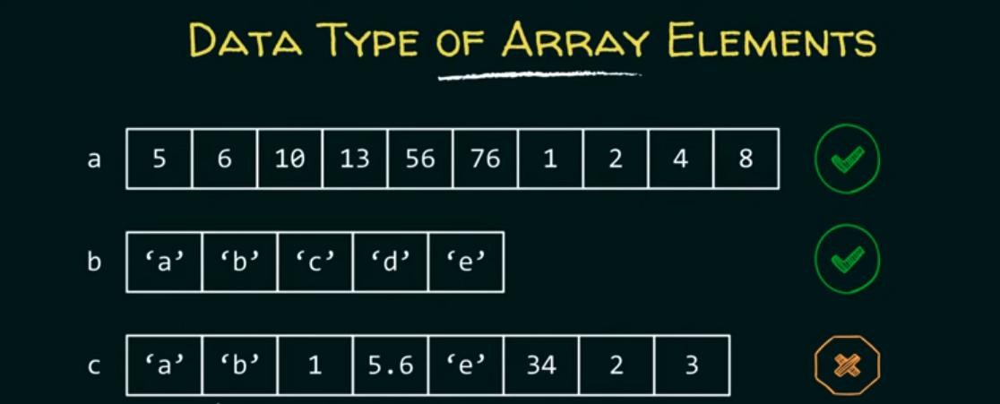
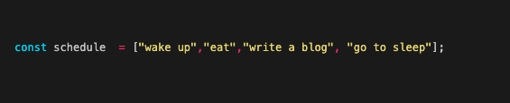
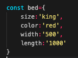

JavaScript fundimentals
By Jacobus Engelbrecht
14 September 2021
HTML and CSS
Think of the moter vehicle manufacturer Tesla. They have their manufacture plant and withing that plant they build a Tesla from start to finish. HTML would be the frame work of the vehicle. They have to make sure everything is structurally stong to hold everything inside like the engine, panels, interior etc. CSS the ashetics of the car. Adding style to the car, what colour exterior, interior, what textures and so on. It doesnt stop there though. Another layer added would be the JavaScript. This is all the electronics and engine in the car. Now the car can drive, use the lights, play music and navigate where ever you want it to go, ironically all controlled by a computer.

Control flow and looping
In JavaScript you have a function called looping, this is where the code will not go any further until the loop is complete. An example of a loop in everyday life would be entering your password on your computer. If you enter it wrong, you have to try again. Your computer wontgo to the next phase till you have entered the right password. Once you have entered the right password that mathces the loop input, then it will continue.
What is a DOM?
The Document Object Model (DOM) is a programming interface for web documents. The DOM represents the document as nodes and objects. Developers can search, add and change nodes and objects in the DOM. This allows for programming languages can interact with the page. A web page is a document that can be either displayed in the browser window or as the HTML source. The DOM allows developers to pull out specific elements from the web browser and edit the code.Im simple terms, if you were listening to the radio and you wanted to change the station you have to find the right FM frequency and then you want to adjust the volume too but how will you do that? With the stereo interface. Look at the DOM as the stereo interface and the radio stations as the code and of course, he music is the web browser output.
The Document Object
This is the top object in the DOM. It has properties and methods which you can use to get information
about the document using a rule known as dot notation. Think of it as a structure tree. Below is an
example of how you would write an HTML document as a tree structure. In this case, the
Developers can interact with the DOM using ‘dot notations’. There are a few available dot notations in JavaScript that you can call elements up withing the DOM:
- getElementsByTagName( )
- getElementsByClassName( )
- getElementsById( )
- getElementsByName( )
- getElementsByTagNameNS( )
- elements is a live HTMLCollection (and/or nodelist) of found elements in the order they appear in the tree.
- name is a string representing the name of the elements.

The Dom makes up a whole webpage and you can interact with it live on a server. There are many properties and methods which you can use to get information about the DOM and manipulate it. Every web browser uses some document object model to make web pages accessible via JavaScript.
Arrays and Objects
An array is a data structure containing a number of data values (all of which are the same type)
What is data structure?
Data structure is a format for arganising and storing data. Also, each data structure is designed to organise data to suit a specific purpose. Imagine an array as a large chunk of memory divided into smaller block of memory and each block is capable of storing value of some type.Elements has to be the same, you can not mix the elements.
Using Arrays are very usefull if you want to store values. Values usually starts counting from [0] and counting up [0,1,2,3,4...]. Here Is what it would look like if I was to write my daily schedule in a array from srart to finish.
What is an object?
An object is a stan alone entity with property and type. Objects can corolate tothings in the real world , heres an example of my bed being the object:  The properties of an object define the characteristics of the object. You access the properties of an object with a simple dot-notation, 'objectName.propertyName'